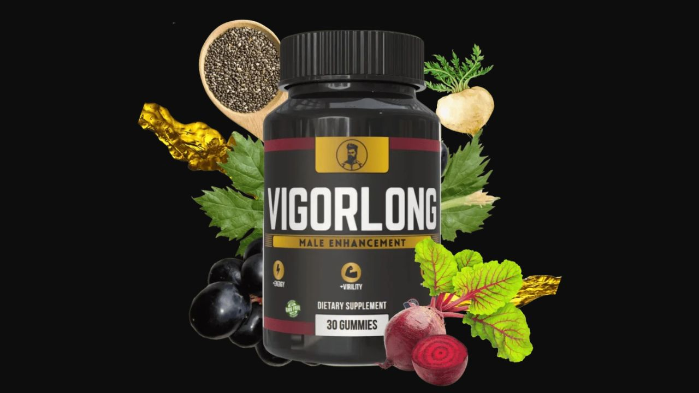

Health Reviews Labs investigated Vigorlong's gummy-format male performance formula and the endothelial dysfunction science behind it. Here's the complete honest analysis.

▶ Watch our full Vigorlong video review before buying
Vigorlong earns its position as one of the most innovative male performance supplements available in 2026 — not through marketing claims, but through two genuine differentiators. First, the gummy delivery format initiates absorption in the oral cavity, providing faster bioavailability for certain compounds than capsule delivery. Second, the formula specifically targets endothelial dysfunction — the age-related decline in the blood vessel lining's ability to produce nitric oxide — rather than simply providing NO precursors. For men over 40 experiencing the energy, performance, and vitality changes associated with declining nitric oxide and testosterone, Vigorlong addresses the root biological mechanism.
⚡ Ready to try Vigorlong?
→ Visit Official Website NowOfficial site · Money-back guarantee · Secure checkoutThe most bioavailable nitric oxide precursor — superior to direct L-Arginine supplementation because it bypasses first-pass metabolism in the liver. Converted to L-Arginine in the kidneys, providing sustained plasma levels for consistent NO production throughout the day. In gummy format, initial absorption begins in the oral cavity.
Backed by a published Journal of the International Society of Sports Nutrition clinical trial showing statistically significant testosterone increase in healthy men. Also shown to reduce SHBG, freeing more testosterone for biological activity. The testosterone component addresses the hormonal side of male vitality decline while L-Citrulline addresses the vascular side.
One of the most consistently replicated findings in botanical men's health research: Maca Root improves libido and sexual function through mechanisms independent of testosterone — making it additive rather than redundant with Tongkat Ali. Peruvian highland populations have used it for centuries; modern research has validated the mechanism.
Essential cofactor for testosterone synthesis — the rate-limiting mineral in Leydig cell testosterone production. Most men over 40 have suboptimal zinc status due to dietary factors and increased urinary zinc excretion. Restoring zinc to optimal levels can meaningfully improve testosterone production.
Dual function: essential cofactor for testosterone synthesis (Vitamin D receptors are present in Leydig cells), and direct support for endothelial function and cardiovascular health. Vitamin D deficiency — extremely common in adults over 40 — is independently associated with reduced testosterone and endothelial dysfunction.
"I was skeptical of the gummy format but the convenience got me to actually take it consistently — which is half the battle with supplements. Results started showing by week two. Energy, performance, the whole picture improved noticeably."
"My wife noticed before I said anything. That's usually how I know something is actually working. Three months in and I feel like I did in my mid-40s. Not exaggerating."
"The combination of energy improvement and performance improvement is what got me. Most supplements do one or the other. Vigorlong addressed both, which makes sense given the dual testosterone and NO mechanism."
Men's Performance · Gummy Format · Endothelial Health · Money-Back Guarantee
→ Visit Official Vigorlong WebsiteCheck the official website for current promotional pricing. The 6-bottle package provides the best per-bottle value and aligns with the recommended 90-day evaluation period. Available in: USA, UK, Canada, New Zealand, Australia.
Money-Back Guarantee · Official Site Only
→ Get Vigorlong at the Official PriceAffiliate Disclosure: This review contains affiliate links. We may earn a commission at no additional cost to you. See our Affiliate Disclosure. Not evaluated by the FDA. Not intended to diagnose, treat, cure, or prevent any disease. Results may vary.